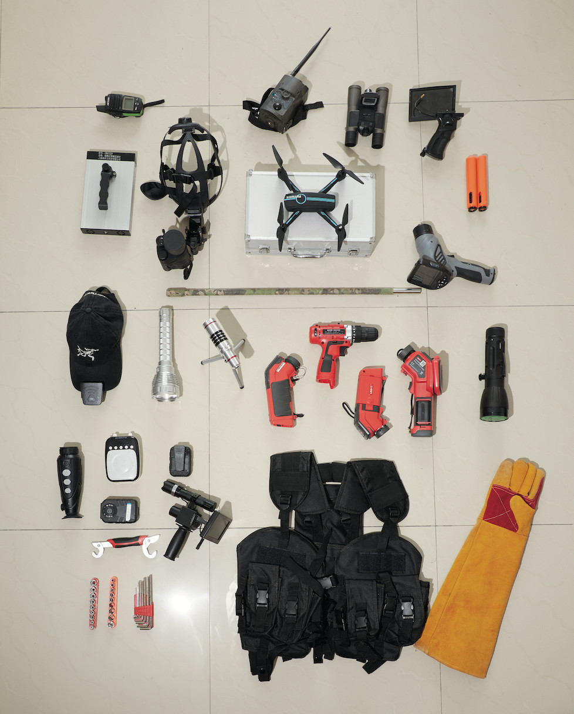

宠物侦探
专门帮助寻找走失宠物的专业人士，运用追踪技术和社区调查。
美食造型师
为广告、菜单和食谱专门美化食物，让它们看起来更诱人。
AI声音生成师
训练和调试AI模型，生成自然、富有情感的人工智能语音。
×

探索世界上独特而有趣的冷门职业
专门帮助寻找走失宠物的专业人士，运用追踪技术和社区调查。
为广告、菜单和食谱专门美化食物，让它们看起来更诱人。
训练和调试AI模型，生成自然、富有情感的人工智能语音。